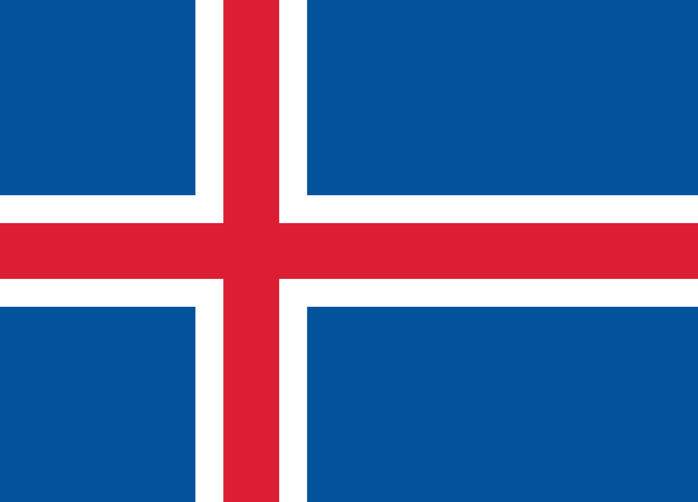

BANDERAS DE EUROPA
-
NORTE DE EUROPA
-
DINAMARCA

La bandera danesa, también llamada Dannebrog ("paño danés" en danés), consiste en un fondo rojo y una cruz blanca que se extiende hasta los bordes de la bandera. El brazo vertical de la cruz sigue el modelo de la otra bandera Escandinava, por lo que se encuentra más cerca del lado izquierdo de la bandera. Según la leyenda, la bandera fue enviada desde el cielo, a fin de ayudar al ejército danés el 15 de junio 1219 durante la Batalla de Lyndanisse. El rey Valdemar II, casi pierde la batalla contra los estonios paganos, si no hubiera habido una señal del cielo que le diera una nueva energía al ejército, lo que les ayudó a ganar la batalla. La bandera también se utiliza en una versión un poco modificada como bandera naval - es cuadrada y tiene dos pequeños picos similares a la cola de una golondrina.
-
ISLANDIA

La bandera de Islandia siguió el ejemplo de los otros países escandinavos y consiste en un fondo azul con una cruz roja, que se inserta en la cruz escandinava blanca tradicional. El color azul se supone que representa al omnipresente océano Atlántico; el rojo, la lava y volcanes de Islandia, y el color blanco se refiere a otros puntos naturales de Islandia - glaciares y géiseres. La Cruz Roja también apunta a los lazos históricos con Dinamarca, que dominaron Islandia desde el siglo 14. Islandia adoptó la bandera en 1918, cuando ganó el estatuto del territorio autónomo de Dinamarca. Sin embargo, la bandera no se convirtió en la bandera nacional oficial hasta 1944, cuando Islandia se convirtió en independiente totalmente.
-
-
SUR DE EUROPA
-
GRECIA

La bandera griega se originó durante el levantamiento contra los turcos en 1821, cuando una bandera azul con una cruz blanca se planteó con el fin de oponerse a la media luna otomana. La bandera en su forma actual fue adoptada en 1822. La cruz se trasladó a la parte superior izquierda de la bandera y se añadieron rayas blancas y azules. Las nueve rayas probablemente deberían recordar a nueve sílabas de la consigna revolucionaria "Eleftheria i Thanatos" ("Libertad o Muerte"). El azul simboliza el mar, cuya belleza inspiró la idea de la revuelta. El blanco representa la pureza de las intenciones revolucionarias y la cruz se refiere a la relación con la Iglesia ortodoxa, que ayudó a mantener la identidad nacional en tiempos de la ocupación. El tono de azul fue cambiado muchas veces, sin embargo, la bandera puede ser llamada "Galanolefci" (azul y blanco en su traducción).
-
ITALIA

La bandera nacional italiana se inspiró en la bandera francesa, que fue llevada allí en 1796 cuando Napoleón atacó Italia. Se diferencia de la bandera francesa solamente por la banda izquierda, que es de color verde, no azul. Hay varias teorías que explican el color verde. Una de ellas dice que Napoleón eligió el verde como un recordatorio de la verde isla de Córcega, mientras que otros piensan que se refiere a los uniformes verdes de la milicia de Milán. El verde también se asocia con la región de Lombardía. Italia estuvo muy fragmentada e inestable hasta finales del siglo 19, y esto también se refleja en los frecuentes cambios de diseño de la bandera. La bandera en su forma actual fue adoptada en 1946.
-
ESPAÑA

El diseño de la bandera española ha sido cambiado muchas veces, especialmente durante los tiempos de la política expansionista española en los siglos 16 y 17. Sin embargo, los colores rojo y amarillo se mantuvieron sin cambios. Actualmente, la bandera tiene tres franjas horizontales, donde la de arriba y la de abajo son de color rojo y la franja central más ancha es de color amarillo. En la parte superior izquierda, se encuentra el escudo nacional. Sus diferentes partes representan Castilla, León, Aragón, Navarra y Granada. Las columnas de Hércules en los lados del escudo de armas simbolizan Gibraltar y Ceuta. La inscripción "Plus Ultra" en una cinta roja envuelta alrededor de las columnas se ha utilizado desde el descubrimiento de América e indica que a diferencia de la creencia original, hay más tierra al oeste de Gibraltar.
-